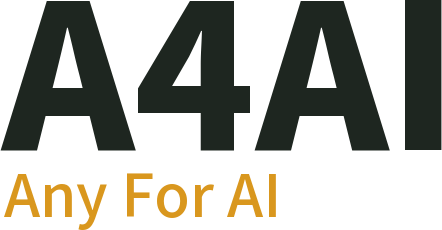

AI 무전 교관
K-방산 2차 아이디어 내부 발표, 2026년 10월

RADIO TRAINING ENGINE
FIELDS
7
· 시간 / 좌표 / 명령 / 상황 / 부대명 / 표적명 / 자산명
UTTERANCES
0
LABELED FIELDS
0
A4AI · RADIO PROCEDURE TRAINING AI
1단계 전장 음성 엔진의 다음 걸음 · ㈜에이포에이아이 · 2026.10
CLICK OR PRESS ANY KEY TO START